Highlander
90 tons · Inner Sphere · 13 variants · 2592 to 3115

Hollis and StarCorps put the Highlander out in 2592 as a city and installation defender. Ninety tons, walk three, and three HildCo jump jets giving it ninety metres of lift, which at the time made it about the heaviest thing in existence that could leave the ground. The jets were there so it could get over a building instead of walking round it, and so it could keep up with faster machines on broken ground.
Then the trial runs happened, and the pilots worked out what else you can do with ninety tons and ninety metres.
You jump, and you come down on top of somebody. A Highlander landing on a light mech does not damage it so much as drive it into the ground. And here is the part that gets me every time I am elbow-deep in a leg assembly: it worked so well that the design team went back and re-engineered the legs to take repeated death from above attacks. They took a desperation move, decided it was a feature, and built the machine around it. It is on the official quirk list to this day as reinforced legs.
What you have got. An M-7 Gauss rifle that takes a ton of armour off at a time, a Holly-20 for the approach, two Harmon mediums and a Holly six-rack for close work. Two tons of ammunition each for the Gauss and both launchers, CASE to keep it from killing you, and fifteen and a half tons of ferro-fibrous. Twelve heat sinks, which sounds thin and is not: the weapons run cool enough that you can keep up an almost continuous barrage.
And the thing the variant list tells you. 12 of the 13 variants built over 523 years kept those three jump jets. One did not. Near enough everyone who ever built a Highlander understood what it was for.
If you are choosing one: the HGN-732 is the real thing and the HGN-732b is flatly better if your era allows it. The HGN-733 is the cheap way in and there is nothing wrong with it. The HGN-740 is the best of the late ones.
Why it earns its tonnage
Ninety tons at walk three is slow, and on most assault machines that is the compromise you accept for armour and guns. On a Highlander it is not the compromise at all, because the thing does not need to walk anywhere. It jumps ninety metres. Over the building, onto the roof, across the river, into the flank you were not watching.
That is what makes it different from every other assault we have covered. An Atlas has to arrive. A Highlander turns up.
The weapons are laid out for a ranged fight that it expects to end up close. The M-7 Gauss rifle is the centrepiece and it is a genuinely nasty thing, stripping a ton of plate at a time with no heat worth mentioning. The Holly-20 covers the approach. Two Harmon mediums and a Holly six-rack are waiting for whatever survives to close.
Twelve single heat sinks looks light for ninety tons until you notice what it is carrying. A Gauss rifle and a missile rack barely register on the heat scale. The old readouts say it can keep up a nearly continuous barrage without taxing the sinks, and they are right, with the caveat every pilot learns eventually: that changes the moment you start jumping. Jets make heat, and a Highlander that has been using them is a Highlander with less margin than the brochure promised.
The legs, and why they matter
Design quirks are usually flavour. On this machine two of them are the entire personality.
| Quirk | What it actually means |
|---|---|
| Reinforced legs | Built to survive landing on people, repeatedly. Nobody else gets this. |
| Cowl | Extra protection over the head, which on a machine that lands hard is not decoration. |
| Command BattleMech | Built to run a formation from inside, and it was used that way for centuries. |
| Difficult ejection | If it does go badly wrong, getting out is harder than it should be. |
That last one deserves a moment. You are in the one assault mech in the game that is encouraged to throw itself through the air and land on things, and the ejection system is worse than average. Somebody made a decision there, and I would like to have been in the room.
Five centuries, and it nearly did not make it
Within a few decades of 2592 nearly every BattleMech regiment in the Regular and Royal armies had them. Then the Star League fell and the Highlander very nearly went with it.
StarCorps' plant on Son Hoa was wrecked towards the end of the Second Succession War and the original HGN-732 became virtually extinct. What kept the name alive was an arrangement between StarCorps and Hollis to rebuild wrecked chassis from scratch using whatever technology was still available, which is how the HGN-733 came about: a Highlander with an autocannon where the Gauss rifle should be, because there were no more Gauss rifles.
Production did not properly restart until the mid-3030s, on Son Hoa and Corey, and even then they were managing barely a dozen a year. A dozen. For the entire Inner Sphere. The Capellans and the Lyrans got most of those and tended to put them in lances alongside Exterminators, Victors, Grasshoppers and Catapults.
Meanwhile ComStar had been sitting quietly on a large stock of Star League Highlanders that nobody knew about. They handed some to the Draconis Combine during the War of 3039, and the sudden appearance of all those supposedly rare 733s, plus a few genuine 732s whose technology got past ComStar's own screening, did serious damage to Lyran morale. Finding out the enemy has a museum piece is one thing. Finding out they have a dozen of them is another.
The Northwind Highlanders were the exception to all of it. Through the Succession Wars they and ComStar were the only forces keeping large numbers of the machine running, and they have a reputation for the Burial that the rest of us are still hearing about.
By 3057 Son Hoa was at full production again, turning out original-spec Highlanders for Lyran units just in time for the FedCom Civil War. And one last detail I enjoy more than I should: some of the leftover chassis got repurposed into a firefighting mech called the St. Florian. Ninety tons of siege machine, retired into putting out fires.
How these are rated
Every verdict below is against other Highlanders available in the same era, not against the rest of the game. Worth saying up front that no Highlander variant fails the Trap test, which is the first chassis on this site where that is true.
Nothing in its era does the chassis's job better for the money.
Does the job competently. Another variant does it better or cheaper, but there is no reason to avoid this one.
Only earns its Battle Value if you specifically need what it carries. C3, stealth, a command console, flak, jump jets.
Another variant in the same era, at no more than 3 percent above its Battle Value, matches or beats it on every Alpha Strike damage band, on armour, on structure, and carries every special ability it has. Nothing gained, something lost, no dearer.
Only the Trap tier is calculated. It is worked out from the variant data rather than decided by me, which means it is falsifiable: to argue with it you only have to name something the cheaper machine gives up. The other three are my opinion and you should treat them that way. 0 of the 13 Highlander variants fail the Trap test. The full rating scale is here, including what it deliberately does not measure.
The variants worth arguing about
All 13 are in the table further down. These are the ones that change how the machine plays.
HGN-732: the real thing
Worth it90 tons · BV 2227 · PV 47 · Sniper · 2592
Walk 3 / Run 5 / Jump 3 · 12 Single · 270 Fusion Engine
1x SRM 6, 1x Gauss Rifle, 1x LRM 20, 2x Medium Laser
The original from 2592 and the one the reputation belongs to. An M-7 Gauss rifle that strips a ton of armour at a time, a Holly-20 for the walk in, two Harmon mediums and a six-rack for the close work, and three HildCo jets giving it ninety metres. Fifteen and a half tons of ferro-fibrous with CASE over the top.
HGN-732b: the Royal
Worth it90 tons · BV 2335 · PV 53 · Sniper · 2598
Walk 3 / Run 5 / Jump 3 · 10 IS Double · 270 Fusion Engine
1x SRM 6, 1x Gauss Rifle, 1x LRM 20, 3x Medium Laser
The SLDF Royal. They gave up two heat sinks and a ton of SRM ammunition, made the rest double, put Artemis on both launchers and squeezed another medium laser into the right torso. Same armour and frame as the standard, considerably more damage at every range, and an overheat value of zero. It never has to think about heat.
HGN-733: the one without a Gauss rifle
Solid90 tons · BV 1801 · PV 44 · Juggernaut · 2866
Walk 3 / Run 5 / Jump 3 · 13 Single · 270 Fusion Engine
1x SRM 6, 1x AC/10, 1x LRM 20, 2x Medium Laser
The downgrade, and it took the loss of technology better than most Star League designs did. The Gauss goes and a Mydron autocannon takes its place, with two more tons of armour to soften the insult. It is the Highlander most people have actually fielded, and at BV 1801 it is the cheapest way into the chassis.
HGN-736: the networked one
Worth it90 tons · BV 2255 · PV 54 · Sniper · 3060
Walk 3 / Run 5 / Jump 3 · 10 IS Double · 270 Fusion Engine
1x Streak SRM 4, 1x Gauss Rifle, 1x LRM 20, 2x Medium Laser
ComStar in the late 3050s, built around an improved C3 computer with Artemis on the twenty rack and a Streak four. They paid for it by swapping twelve singles for ten doubles. If you are running a C3i network this is the one.
HGN-694: the one that cannot jump
Situational90 tons · BV 2369 · PV 48 · Juggernaut · 3062
Walk 3 / Run 5 / Jump 0 · 10 IS Double · 270 Light Engine
1x Gauss Rifle, 1x Heavy Gauss Rifle, 2x Large Laser
Twin large lasers and a heavy Gauss alongside the M-7, and they got the weight by removing the missiles, the medium lasers and, unforgivably, the jump jets. It is the only Highlander in 523 years that cannot jump. Enormous damage and it is not really a Highlander any more.
HGN-738: the hardest hitter
Situational90 tons · BV 2413 · PV 48 · Juggernaut · 3069
Walk 3 / Run 5 / Jump 3 · 10 IS Double · 270 Fusion Engine
2x ER Medium Laser, 1x ER Large Laser, 1x LRM 15, 1x Heavy Gauss Rifle, 1x Streak SRM 4
A heavy Gauss rifle, an Artemis fifteen rack and an ER large. It hits about as hard as the chassis ever has, and the ammunition sits in one torso with the Gauss in the other, which makes it alarmingly easy to gut with a good critical hit even with CASE in there.
HGN-740: the late-era pick
Worth it90 tons · BV 2232 · PV 49 · Sniper · 3115
Walk 3 / Run 5 / Jump 3 · 15 IS Double · 270 Fusion Engine
4x M-Pod, 1x Streak SRM 6, 1x ER PPC, 1x LRM 20, 2x ER Medium Laser
Dark Age. An ER PPC with a capacitor for the main punch, an Artemis twenty rack, a Streak six and ER mediums, and M-pods on each leg for anything that gets underneath. Fifteen doubles and light ferro-fibrous. The most complete late Highlander.
HGN-732 Jorgensson: a Khan’s machine
Worth it90 tons · BV 2682 · PV 52 · Sniper · 2829
Walk 3 / Run 5 / Jump 3 · 13 IS Double · 270 Fusion Engine(IS)
2x ER Large Laser, 1x Gauss Rifle, 1x LRM 20
Khan Cal Jorgensson of Clan Widowmaker's machine. Clan ER large lasers, a Clan Gauss rifle and an Artemis-guided twenty rack, with the standard Highlander's protection underneath. The best long range damage in the chassis and priced like it.
On the table
Piloting one. Stop thinking about the walk speed. Three is irrelevant when you can put yourself ninety metres away in any direction, including up. Use the jets for position, not for escape: a Highlander that lands behind a firing line has just ruined somebody's afternoon. And yes, the Burial works, and the legs are built for it, but do the arithmetic first. Death from above hurts you too, and at ninety tons a failed attempt puts you on the ground in front of everybody.
Fighting one. The awkward thing is that it does not have to come to you and it does not have to stay away. Deny it landing ground if you can. Water and rough terrain are your friends. If it commits to a Burial and misses, that is your window, because a fallen assault mech is a stationary assault mech for a turn. Against the HGN-694, the one without jets, you can play it like any other slow assault, which is exactly why giving up the jets was a mistake.
What I see go wrong. People save the jump jets for emergencies. That is backwards. The jets are the weapon system; the Gauss rifle is just what it carries. And people attempt the Burial on targets that are not worth it, which is how a two thousand Battle Value machine ends up prone next to a dead Locust.
Against OpFor Command
If you run solo games with our AI opponent, the Highlander splits almost down the middle between two role tags, and they play very differently.
- 6 variants are tagged Sniper, including the HGN-732 itself. Long range weighting, negative aggression, and it will use the jets to hold a good firing position rather than to close.
- 7 are Juggernauts, including the HGN-733, HGN-734 and HGN-738. Short range weighting and the strongest aggression modifier in the engine. Those will come at you, and they can jump.
An enemy Juggernaut Highlander is one of the more uncomfortable things the engine can field, because the usual answer to an aggressive assault mech is to stay away from it and that does not work here.
All 13 variants
Damage figures are the Alpha Strike short, medium and long values. BV is Battle Value 2.0.
| Variant | Intro | BV | PV | Role | Weapons | S/M/L | Verdict |
|---|---|---|---|---|---|---|---|
| Star League | |||||||
| HGN-732 | 2592 | 2227 | 47 | Sniper | 1x SRM 6, 1x Gauss Rifle, 1x LRM 20, 2x Medium Laser | 3/4/3 | Worth it |
| HGN-732b | 2598 | 2335 | 53 | Sniper | 1x SRM 6, 1x Gauss Rifle, 1x LRM 20, 3x Medium Laser | 5/6/4 | Worth it |
| Early Succession War | |||||||
| HGN-732 (Colleen) | 2801 | 2164 | 51 | Juggernaut | 1x Prototype Streak SRM 6, 1x ER PPC, 2x LRM 15, 2x Medium Pulse Laser | 4/5/3 | Situational |
| HGN-732 (Jorgensson) | 2829 | 2682 | 52 | Sniper | 2x ER Large Laser, 1x Gauss Rifle, 1x LRM 20 | 4/5/5 | Worth it |
| HGN-733 | 2866 | 1801 | 44 | Juggernaut | 1x SRM 6, 1x AC/10, 1x LRM 20, 2x Medium Laser | 3/3/2 | Solid |
| HGN-733C | 2866 | 1857 | 44 | Juggernaut | 1x SRM 6, 1x AC/20, 1x LRM 20, 2x Medium Laser | 3/3/2 | Solid |
| HGN-733P | 2866 | 1865 | 46 | Sniper | 1x SRM 6, 1x PPC, 1x LRM 20, 2x Medium Laser | 3/4/3 | Solid |
| Clan Invasion | |||||||
| HGN-736 | 3060 | 2255 | 54 | Sniper | 1x Streak SRM 4, 1x Gauss Rifle, 1x LRM 20, 2x Medium Laser | 4/5/4 | Worth it |
| Civil War | |||||||
| HGN-694 | 3062 | 2369 | 48 | Juggernaut | 1x Gauss Rifle, 1x Heavy Gauss Rifle, 2x Large Laser | 5/6/3 | Situational |
| HGN-734 | 3062 | 2214 | 43 | Juggernaut | 2x ER Medium Laser, 1x LB 20-X AC, 2x Streak SRM 6, 1x ER Large Laser, 1x Medium Pulse Laser | 4/4/1 | Solid |
| Jihad | |||||||
| HGN-738 | 3069 | 2413 | 48 | Juggernaut | 2x ER Medium Laser, 1x ER Large Laser, 1x LRM 15, 1x Heavy Gauss Rifle, 1x Streak SRM 4 | 4/4/3 | Situational |
| HGN-641-X-2 | 3070 | 2185 | 55 | Juggernaut | 2x MML 7, 1x Gauss Rifle, 2x ER Medium Laser | 5/5/3 | Solid |
| Late Republic | |||||||
| HGN-740 | 3115 | 2232 | 49 | Sniper | 4x M-Pod, 1x Streak SRM 6, 1x ER PPC, 1x LRM 20, 2x ER Medium Laser | 4/5/3 | Worth it |
Where and when you can field it
Availability for the HGN-732 by era, straight off the Master Unit List. The gaps are the story: this is a machine that spent centuries being rare.
| Era | Available to |
|---|---|
| Star League (2571 - 2780) | Inner Sphere General, Mercenary, Rim Worlds Republic - Terran Corps, Star League General |
| Early Succession War (2781 - 2900) | HW Clan General, Inner Sphere General, Mercenary, Star League in Exile |
| Late Succession War - LosTech (2901 - 3019) | ComStar, HW Clan General |
| Late Succession War - Renaissance (3020 - 3049) | ComStar, Draconis Combine, HW Clan General |
| Clan Invasion (3050 - 3061) | ComStar, Federated Commonwealth, Federated Suns, HW Clan General, IS Clan General, Kell Hounds, Lyran Alliance, Lyran Commonwealth, Mercenary, Wolf's Dragoons, Word of Blake |
| Civil War (3062 - 3067) | ComStar, Federated Commonwealth, Federated Suns, HW Clan General, IS Clan General, Kell Hounds, Lyran Alliance, Mercenary, Wolf's Dragoons, Word of Blake |
| Jihad (3068 - 3080) | ComStar, Escorpión Imperio, Federated Suns, HW Clan General, IS Clan General, Kell Hounds, Lyran Alliance, Mercenary, Society, Wolf's Dragoons, Word of Blake |
| Early Republic (3081 - 3100) | Escorpión Imperio, Inner Sphere General, IS Clan General, Marian Hegemony, Mercenary |
| Late Republic (3101 - 3130) | Clan Hell's Horses, Inner Sphere General, Marian Hegemony, Mercenary, Rasalhague Dominion |
| Dark Age (3131 - 3150) | Capellan Confederation, Draconis Combine, Federated Suns, Marian Hegemony, Mercenary, Pirates |
| ilClan (3151 - 9999) | Capellan Confederation, Draconis Combine, Federated Suns, Marian Hegemony, Mercenary, Pirates |
The rest of the Highlander family
Highlander IIC
90 tons · Clan · 3 variants · BV 2928 to 3001
The Highlander went on the Exodus with Kerensky, and the Clans built their own. Essentially a 732 with Clan technology throughout, which is as alarming as it sounds.
Other machines that do the same job
Atlas
100 tons · Mixed · 28 variants · BV 1787 to 2789
No relation. A hundred tons that cannot jump, and the comparison people always want. The Atlas has to arrive. A Highlander turns up.
Victor
80 tons · Inner Sphere · 19 variants · BV 1236 to 2279
The other jumping assault, and the one Highlanders were routinely fielded alongside. Lighter, faster, and it carries an autocannon instead of a Gauss rifle.
Grasshopper
70 tons · Inner Sphere · 11 variants · BV 1354 to 2344
Not an assault at all, but it jumps and it was in the same lances. If you like the idea and cannot afford the tonnage, this is where to look.
Take it to the table
Common questions
What is the Highlander Burial?
Death from above, done deliberately. The Highlander jumps and lands directly on top of an enemy machine, and against something light it can drive it into the ground. Pilots invented it during the design's trial runs and it worked well enough that the design team re-engineered the legs to survive doing it repeatedly. It is on the modern quirk list as reinforced legs.
What is the best Highlander variant?
The HGN-732 is the machine the reputation belongs to, and the SLDF Royal HGN-732b hits harder at every range for the same armour if your era allows it. For a cheaper option the HGN-733 at BV 1801 is perfectly sound, and the HGN-740 is the strongest of the late variants.
Do all Highlanders have jump jets?
All but one. 12 of the 13 variants carry three jump jets for ninety metres. The exception is the HGN-694, which dropped them to fit a heavy Gauss rifle and twin large lasers. It hits harder and it gives up the thing that makes a Highlander a Highlander.
Does the Highlander overheat?
Not from its guns. A Gauss rifle and missile launchers generate very little heat, so twelve single sinks are enough for a near-continuous barrage. The jump jets are the complication: use them hard and the margin the weapons left you disappears.
Why is the Highlander so rare in the Succession Wars?
The StarCorps plant on Son Hoa was destroyed near the end of the Second Succession War and the original went virtually extinct. Rebuilt chassis kept the name alive, and production did not restart properly until the mid-3030s, at barely a dozen machines a year. ComStar and the Northwind Highlanders were the only forces keeping large numbers running.
Stats on this page are generated directly from our variant database, which is reconciled against the Master Unit List for Battle Value, introduction dates and per-era faction availability. Alpha Strike damage values are the standard card figures. If you spot something wrong, tell me and I will fix it.